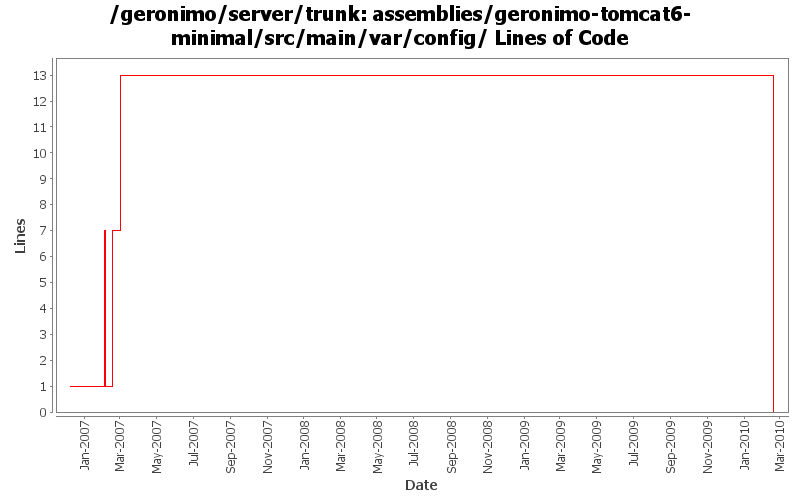

[root]/assemblies/geronimo-tomcat6-minimal/src/main/var/config

| Author | Changes | Lines of Code | Lines per Change |
|---|---|---|---|
| Totals | 21 (100.0%) | 33 (100.0%) | 1.5 |
| jdillon | 4 (19.0%) | 20 (60.6%) | 5.0 |
| gdamour | 8 (38.1%) | 12 (36.4%) | 1.5 |
| pmcmahan | 5 (23.8%) | 1 (3.0%) | 0.2 |
| dwoods | 4 (19.0%) | 0 (0.0%) | 0.0 |
Handle rename of tomcat plugin from javaee5 to javaee6 and rename assembly. Pull in wab instead of web plugingroups.
0 lines of code changed in 4 files:
Fixed indent, use ${version} instead of ${pom.version}
12 lines of code changed in 2 files:
Std props
8 lines of code changed in 2 files:
Second attempt to change the way the online/offline deployers and the JSR88
deployment driver work. The first attempt was breaking the TCK amd the
eclipse plugin.
Online deployer, i.e. deployer.jar, boots a Kernel to load its dependencies,
e.g. geronimo-deploy-tool, and registers the available ModuleConfigurers with
the DeploymentManager.
ModuleConfigurers to be registered are loaded by the persistent configuration
list jsr88-configurer-config.xml.
In the case of an offline deployment, the online deployer starts the
offline-deployer configuration within the same Kernel. In turn, the
offline-deployer configuration starts a list of configurations to register
the available module builders.
Add a log4j configuration for the online deployer.
DeploymentFactoryBootstrapper is the new JSR88 deployment driver. It boots a
kernel; starts the configuration list jsr88-configurer-config.xml; retrieves
the "actual" DeploymentFactory implementation from the kernel; and delegates
to this retrieved imoplementation.
The JSR88 JAR driver is now named jsr88-deploymentfactory.jar.
This fixes:
* GERONIMO-2794 - Improve online deployer to register ModuleConfigurers from the repository; and
* GERONIMO-2767 - Minimize side effects of the offline deployer
6 lines of code changed in 2 files:
Revert deployer changes as they do break the Eclipse plugin and TCK.
I will investigate offline.
svn merge -r503370:503369 .
0 lines of code changed in 3 files:
Online deployer, i.e. deployer.jar, boots a Kernel to load its dependencies,
e.g. geronimo-deploy-tool, and registers the available ModuleConfigurers with
the DeploymentManager.
ModuleConfigurers to be registered are loaded by the persistent configuration
list jsr88-configurer-config.xml.
In the case of an offline deployment, the online deployer starts the
offline-deployer configuration within the same Kernel. In turn, the
offline-deployer configuration starts a list of configurations to register
the available module builders.
Add a log4j configuration for the online deployer.
This fixes:
* GERONIMO-2794 - Improve online deployer to register ModuleConfigurers from the repository; and
* GERONIMO-2767 - Minimize side effects of the offline deployer
6 lines of code changed in 3 files:
GERONIMO-2670 update assemblies to point at repository list for geronimo-2.0, plus update geronimo-plugin.xml files
to use ${version} instead of ${pom.currentVersion}
1 lines of code changed in 1 file:
change "tomcat" artifactIds to "tomcat6" for :
configs/tomcat6
configs/tomcat6-deployer
modules/geronimo-tomcat6
modules/geronimo-tomcat6-builder
assemblies/geronimo-tomcat6-jee5
assemblies/geronimo-tomcat6-minimal
updated various poms, deployment plans, and plugin-metadata.xml files to reference the new tomcat6 artifactId
0 lines of code changed in 4 files: